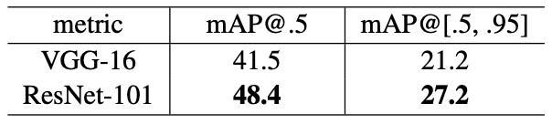
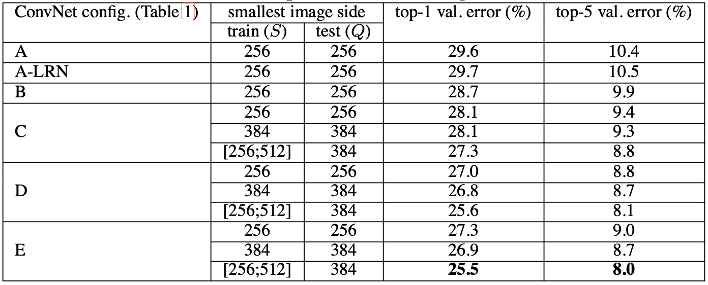

ResNet model
Data
The main dataset used in this paper is the challenging ImageNet dataset, which has become a standard. benchmark for large-scale object recognition. Also, experiments were conducted on other datasets like CIFAR-10, PASCAL and MS COCO.
Architecture
ResNet is originally designed by Kaiming He et al.[1] to address the notorious problem of degradation with increasing depth of networks, which means that the accuracy starts to degrade rapidly from saturation point. Since the degradation is not due to overfitting, adding more layers won’t help but will lead to even higher training error.
The basic architecture of ResNet is shown in fig 1. In which, given $H(x)$ as the desired underlying mapping, $F(x)$ is introduced as residual mapping for stacked nonlinear layers, where $F(x) := H(x)-x$ (which stands for the difference between input $x$ and output of the function $H(x)$). Thus, the original mapping $H(x)$ is recase into $F(x)+x$. It’s claimed that residual mapping $F(x)$ is easier to optimize than the original, unreferenced mapping $H(x)$ because we only need to set $F(x) = 0$.

Fig 1. Residual learning: a building block
Now the problem is the implementation of $F(x)+x$. It can be realized by feedforward neural networks with shortcut connections, which skip one or more layers in the network. There are two kinds of shortcut, first is the identity mapping as eqn. 1 shows, another is the projection shortcut as eqn.2 shows.
$y=F(x,{W_i})+x$ (1)
$y=F(x,{W_i})+W_{s}x$ (2)
Kaiming He et al. has tried 3 options of shortcuts connection. (A) zero-padding shortcuts are used for increasing dimensions, and all shortcuts are parameter-free; (B) projection shortcuts are used for increasing dimensions, and other shortcuts are identity; and (C) all shortcuts are projections. By implementing three different options on ImageNet 2012 dataset with ResNet-34, it’s clear that all three options are considerably better than the plain counterpart, while B is slightly better than A and C is marginally better than B. However, the differences are quite trivial to reveal that projection shortcuts are not essential for addressing the degradation problem for that identity mapping is sufficient.
An example of ResNet model architecture used in ImageNet classification is shown below in fig 2. The solid line representing identity shortcuts can be directly used when input and output are of the same dimensinos. When the dimensions increase, shortcut options (A) and (B) have been performed with a stride of 2.

Fig 2. ResNet example network architectures for ImageNet
Dotted shortcuts: increase dimensions. Solid shortcuts: identity mapping.
Results
- ImageNet

Fig 3. Training error on ImageNet
Table 1. Top-1 error(%, 10-crop testing) on ImageNet validation
Table 2. Error rates(%, 10-crop testing) on ImageNet validation
As it’s shown in table 1, we can clearly see that with plain net, the deeper 34-layer has higher validation error than the shallower 18-layer net. To further explain this phenomenon, training/validation errors during the training procedure were shown in fig 3, which reveals the degradation problem that 34-layer plain net has higher training error throughout the whole training procedure. One of the possible causes is that the deep plain nets may have exponentially low convergence rates, which impact the reducing of the training error. On the contrary, the 34-layer ResNet is better than the 18-layer ResNet by 2.8%. More importantly, the training error of 34-layer ResNet is not only lower but also more generalizable to the validation data, which addresses the degradation problem and obtains accuracy gains from increased depth.
If we look at table 2, the 34-layer ResNet reduces the top-1 error by 3.5% compared to its plain counterpart, resulting from the successfully reduced training error. Also, the 18-layer ResNet converges faster than the plain one, where ResNet eases the optimization by providing faster convergence at the early stage.
- CIFAR-10
![CIFAR_test_error]
Fig 4. Classification error on CIFAR-10 test set
More studies were conducted on CIFAR-10 dataset consisting of 50K training images and 10K test images in 10 classes. All methods are with data augmentation. The authors didn’t use strong regularization such as maxout or dropout but just simply imposed regularization via deep and thin architectures by design. In table 6, the 110-layer ResNet converges well and get the state-of-the-art error rates. But the 1202-layer network is shown to perform worse due to overfitting.
- Object Detection on PASCAL and MS COCO
ResNet also has good generalization performance on object detection. The authors adopted Faster R-CNN as the detection method. Fig 5 and 6 shows the mAP (mean Average Precision) for two datasets. It’s apparent that ResNet-101 has significant improvements than VGG-16 on this task.
Fig 5. Object detection mAP (%) on PASCAL VOC 2007/2012 test sets

Fig 6. Object detection mAP(%) on COCO validation set
Major takeaways
ResNet fixes the problem of accuracy degradation with increased network depth, not only does it achieve state-of-the-art performance but it can also ease the optimization by providing faster convergence.
VGG Model
Data
Simonyan et al. use ILSVRC-2012 dataset including 1000 classes of images which is split into three sets: training (1.3M images), validation (50K images), and testing (100K images with held-out class labels).
The input to ConvNets is fixed-size 224×224 RGB images, which were randomly cropped from scaled training images (one crop per image per SGD iteration). Then the crops underwent Radom horizontal flipping and random RGB color shift to further augment the training set. Ass for data preprocessing, it only includes subtractin the mean RGB value on the training set from each pixel.
Architecture
Table 1. ConvNet configurations
The depth of configurations increases from the left to the right, convolutional layer parameters are denotes as "conv(receptive field size)-(number of channels)".
Simonyan et al. have built up 6 models, which all follow the similar design and differ only in the depth from 11 to 19 weight layers. For example, VGG-11 uses 2 stacking layers of conv3-512 whileVGG-19 uses 4 layers in the last layer of blocks.
Worth mentioning, Simonyan et al. use convolution filters with a very small receptive field (3×3 with stride 1) instead of relatively large ones like 11×11 with stride 4 in (Krizhevsky et al., 2012) or 7×7 with stride 2 in (Zeiler & Fergus, 2013; Sermanet et al., 2014), which is pointed out by authors to make the decision function more discriminative by incorporating three non-linear rectification layers instead of a single one and also decrease the number of parameters. More info about receptive field can be found here.
Classification Experiments
Simonyan et al. have conducted four major experiments which are single-scale, multi-scale and multi-crop evaluation as well as ConvNet fusion.
Single-scale evaluation
In this section, the authors used the first approach including two fixed scales (S = 256, S = 384) to set the traing scale S, which can be interpreted as the smallest side of an isotropically-rescaled training image from which the ConvNet input is cropped. Thus, it’s called single-scale training.
Table 2. ConvNet performance at a single test scale

From table 2, we can see that the local response normalisation (A-LRN) doesn’t improve the model A performance but it leads to increased memory consumption and computation time. The major purpose to use LRN is to perform a kind of ‘lateral inhibition’ by normalizing over local input regions. More info about LRN can be obtained in section 3.3.
The major conclusion from the evaluation is that the classification error decreases with the increases ConvNet depth. Notably, configuration C which contains three 1×1 convolutional layers performs worse than D which uses 3×3 convolutional layers throughout the network. This indicates that while the additional non-linearity does help (C is better than B), it is also important to capture spatial context by using conv. filters with non-trivial receptive fields (D is better than C). In addition, a net based on configuration B with each pair of 3×3 conv. layers with a single 5×4 conv. layer was measured to have 7% higher top-1 error than original B net, which confirms that a deep net with small filters outperforms a shallow net with larger filters.
Also, it shows that training set augmentation by scale jittering at training time is helpful for capturing multi-scale image statistics by comparing same depth net with scale jittering and with fixed smallest side. For example, as for configuration C, the top-1 and top-5 error when $S \in [256,512]$ are both lower than fixed scale ($S=256, S=384$).
Multi-scale evaluation
The second approach to setting S in this section is multi-sclae training, where each training image is individually rescaled by randomly sampling S from a certain range $[S_{min}, S_{max}]$ which is [256, 512]. This method is referred to more generally as ‘scale jittering’, which can be used to augment the training set. If interested, you can learn more about data augmentation and scale jittering here.
Several rescaled versions of test image is corresponding to different values of Q (referred to as test scale), followed by averaging the resulting class posteriors. The results, presented in Table 3, indicate that scale jittering at test time leads to better performance (as compared to evaluating the same model at a single scale in Table 2).
Table 3. ConvNet performance at multiple test scales
Multi-crop evaluation
Multi-crop at test time is a form of data augmentation that a model uses during test time, as opposed to most data augmentation techniques that run during training time.
Broadly, the technique involves:
- cropping a test image in multiple ways
- using the model to classify these cropped variants of the test image
- averaging the results of the model’s many predictions
In this section, the authors have evaluated networks using 50 crops per scale (5×5 regular grid with 2 flips) for a total of 150 crops over 3 scales.
Table 4. ConvNet evaluation techniques comparison
As can be seen, using multiple crops performs slightly better than dense evaluation, and the two approaches are indeed complementary, as their combination outperforms each of them.
ConvNet fusion
In this section, the authors combined the outputs of several models by averaging their soft-max class posterios and got the performance increased.
Table 5. Multiple ConvNet fusion results
Major takeaways
A conventional ConvNet architecture with substantially increased depth can achieve state-of-the-art performance on large-scale image classification. Many modern image classification models are built on top of this architecture called VGGnet.